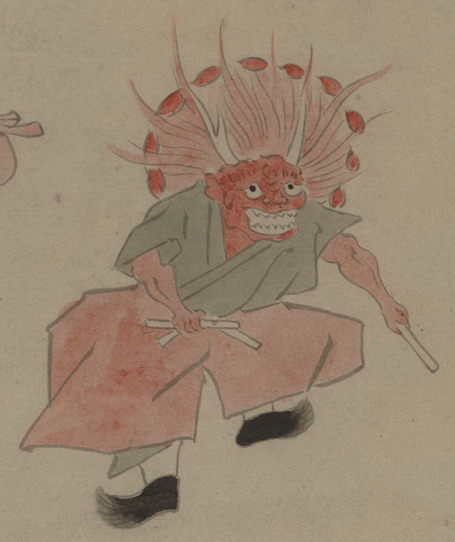

舞う赤い鬼。長い角を生やして、頭部にシャグマのような赤い飾りをつけ、緑の衣と赤い袴、黒い靴を身にまとっている。両手にバチのような物を持ち、足を踏みならしている。
出典：親書誌：U426_nichibunken_0150：付喪神絵詞；ツクモガミエコトバ／日付：2010／資源識別子：U426_nichibunken_0150_0076_0000
Copyright (c)2010- International Research Center for Japanese Studies, Kyoto, Japan. All rights reserved.